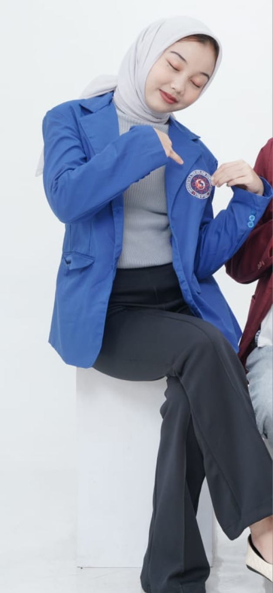

Saya adalah individu yang komunikatif,proaktif,dan berorientasi pada
hasil.Kelebihan saya terletak pada kemampuan untuk membangun hubungan yang
baik,memecahkan masalah secara kreatif,dan menjaga fokus pada
kualitas.saya percaya bahwa komunikasi yang efektif dan kerja tim yang
solid adalah kunci untuk menciptakan hasil yang luar biasa.Saya selalu
berkomitmen untuk belajar hal baru,menghadirkan solusi inovatif,dan
memberikan kontribusi terbaik dalam setiap peran yang saya emban.
Saya Gina,dan menulis adalah bagian dari hidup saya.Sejak duduk dibangku
sekolah,saya selalu merasa bahwa kata-kata memiliki kekuatan yang luar
biasa.Dari sekedar menuliskan catatan kecil di buku harian hingga membuat
cerita pendek untuk teman-teman,menulis adalah tempat saya menemukan
kedamaian dan ekspresi diri.
Sebagai seorang mahasiswa,menulis tidak hanya menjadi hobi tetapi juga
bagian integral dari apa yang saya lakukan setiap hari.Saya percaya bahwa
tulisan yang baik mampu membangun koneksi,menginspirasi,dan membuka
wawasan baru bagi pembaca.
Ditengah kesibukan sehari hari,saya selalu meluangkan waktu untuk terus
mengasah keterampilan menulis saya.Baik melalui blog pribadi,media
sosial,atau proyek-proyek profesional,saya berkomitmen untuk menghasilkan
karya yang autentik dan bermakna.
Selain itu,saya percaya bahwa menulis adalah proses belajar yang tiada
akhir.Setiap cerita yang saya tulis adalah hasil dari
pengalaman,observasi,dan refleksi diri.Dengan menulis,saya tidak hanya
membagikan kisah kepada orang lain,tetapi juga belajar lebih banyak
tentang siapa saya sebenarnya.
Visi saya adalah menjadi seseorang yang dikenang melalui karya-karya
tulisan saya.Bukan hanya karena keindahan kata katanya,tetapi juga karena
dampak yang ditinggalkannya di hati pembaca.Bagi saya,menulis adalah cara
untuk berbicara kepada dunia.Dan melalui tulisan ini,saya ingin anda
mengenal saya,seorang individu yang percaya bahwa kata-kata dapat mengubah
hidup,satu cerita pada satu waktu.
About Me
Menulis Sebagai Jembatan Antara Imajinasi dan Dunia
Nyata
Menulis bagi saya bukan hanya sekedar aktivitas,tetapi cara
untuk memahami
dunia dan diri sendiri.Setiap goresan
pena atau ketikan di keyboard adalah bentuk ekspresi jiwa,
sekaligus upaya untuk memberikan dampak positif kepada
orang lain.
Hobi ini juga membantu saya membangun kemampuan
berpikir kritis,menyusun ide secara sistematis,dan
menyampaikan pesan dengan cara yang menarik.Menulis
telah menjadi bagian dari identitas saya dan alat utama
dalam membangun personal branding saya.Melalui tulisan
saya ingin dikenal sebagai seseorang yang mampu
menceritakan kisah-kisah yang relevan,inspiratif,dan
membawa perubahan.Saya percaya bahwa tulisan yang
baik bisa menjadi alat untuk mendekatkan hati,membuka
pikiran,dan menciptakan solusi.
My Hoby
